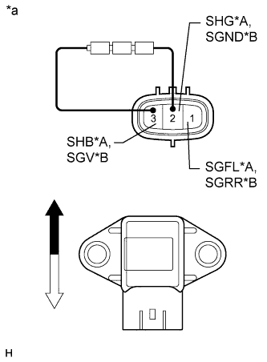

DTC C1715/15 Неисправность правого переднего датчика ускорения |
DTC C1716/16 Неисправность левого переднего датчика ускорения |
DTC C1717/17 Неисправность заднего датчика ускорения |
DTC C1796/96 Правый передний датчик ускорения (вверх и вниз) |
DTC C1797/97 Левый передний датчик ускорения (вверх и вниз) |
DTC C1798/98 Задний датчик ускорения (вверх и вниз) |
| Код DTC | Условие обнаружения DTC | Неисправный участок |
| C1715/15 | Выполняется любое из следующих условий:
|
|
| C1716/16 | Выполняется любое из следующих условий:
| ЭБУ управления подвеской (левый передний датчик ускорения) |
| C1717/17 | Выполняется любое из следующих условий:
|
|
| C1796/96 | На ровной поверхности датчик ускорения в течение, по крайней мере, 1 с выдает сигнал, соответствующий ускорению не менее +/-1,96 м/с2. |
|
| C1797/97 | На ровной поверхности датчик ускорения в течение, по крайней мере, 1 с выдает сигнал, соответствующий ускорению не менее +/-1,96 м/с2. | ЭБУ управления подвеской (левый передний датчик ускорения) |
| C1798/98 | На ровной поверхности датчик ускорения в течение, по крайней мере, 1 с выдает сигнал, соответствующий ускорению не менее +/-1,96 м/с2. |
|
| 1.СНИМИТЕ ПОКАЗАНИЯ ПОРТАТИВНОГО ДИАГНОСТИЧЕСКОГО ПРИБОРА (G SENSOR) |
Выключите зажигание.
Подсоедините портативный диагностический прибор к DLC3.
Включите зажигание (IG).
Включите портативный диагностический прибор.
Войдите в следующие меню: Chassis / Air suspension / Data List.
| Информация на дисплее прибора | Измеряемая величина / диапазон измерения | Нормальное состояние | Замечание по диагностике |
| (Up & Down)G Sensor FR | Показание правого переднего датчика ускорения (по вертикали) / Мин.: -1045,29 м/с2 Макс.: 1045,26 м/с2 | 0 +/- 0,98 м/с2 в неподвижном состоянии | Значение изменяется при раскачивании автомобиля (спереди справа). |
| (Up & Down)G Sensor FL | Показание левого переднего датчика ускорения (по вертикали) / Мин.: -1045,29 м/с2 Макс.: 1045,26 м/с2 | 0 +/- 0,98 м/с2 в неподвижном состоянии | Значение изменяется при раскачивании автомобиля (спереди слева). |
| Задний датчик ускорения (вверх и вниз) | Показание заднего датчика ускорения (по вертикали) / Мин.: -1045,29 м/с2 Макс.: 1045,26 м/с2 | 0 +/- 0,98 м/с2 в неподвижном состоянии | Значение изменяется при раскачивании автомобиля (сзади). |
|
| ||||
| OK | ||
| ||
| 2.ПРОВЕРЬТЕ ДАТЧИК УСКОРЕНИЯ (ПРАВЫЙ ПЕРЕДНИЙ ИЛИ ЗАДНИЙ) |
|  |
| *A | Для правой передней двери |
| *B | Для задней двери |
| *a | Устройство с неподсоединенным жгутом проводов (датчик ускорения) |
 | Верх |
 | Низ |
Проверьте правый передний датчик ускорения (в случае вывода DTC C1715/15 или C1796/96).
Снимите правый передний датчик ускорения (Нажмите здесь).
Соедините последовательно 3 сухие батареи по 1,5 В.
Подсоедините положительный (+) вывод батарей к контакту 3 (SHB) датчика ускорения, а отрицательный (-) вывод – к контакту 2 (SHG). Затем измерьте напряжение между контактами 1 (SGFL) и 2 (SHG).
Измерьте напряжение в соответствии со значениями, приведенными в таблице.
| Контакты для подключения диагностического прибора | Условие | Заданные условия |
| 1 (SGFL) - 2 (SHG) | Датчик в вертикальном положении | Приблизительно 2,0 - 2,5 В |
| Датчик наклонен влево или вправо от вертикального положения | Изменяется в диапазоне примерно от 0,9 до 2,3 В |
Проверьте задний датчик ускорения (в случае вывода DTC C1717/17 или C1798/98).
Снимите задний датчик ускорения (Нажмите здесь).
Соедините последовательно 3 сухие батареи по 1,5 В.
Подсоедините положительный (+) вывод батарей к контакту 3 (SGV) датчика ускорения, а отрицательный (-) вывод – к контакту 2 (SGND). Затем измерьте напряжение между контактами 1 (SGRR) и 2 (SGND).
Измерьте напряжение в соответствии со значениями, приведенными в таблице.
| Контакты для подключения диагностического прибора | Условие | Заданные условия |
| 1 (SGRR) - 2 (SGND) | Датчик в вертикальном положении | Приблизительно 2,0 - 2,5 В |
| Датчик наклонен влево или вправо от вертикального положения | Изменяется в диапазоне примерно от 0,9 до 2,3 В |
| Результат | Следующий шаг |
| OK | А |
| NG (правый передний датчик ускорения) | B |
| NG (задний датчик ускорения) | C |
|
| ||||
|
| ||||
| А | |
| 3.ПРОВЕРЬТЕ ЖГУТ ПРОВОДОВ И РАЗЪЕМ (ДАТЧИК УСКОРЕНИЯ – ЭБУ УПРАВЛЕНИЯ ПОДВЕСКОЙ) |
Проверьте правый передний датчик ускорения (в случае вывода DTC C1715/15 или C1796/96).
Отсоедините разъем A13 правого переднего датчика ускорения.
Отсоедините разъем A14 ЭБУ управления подвеской.
Измерьте сопротивление в соответствии со значениями, приведенными в таблице ниже.
| Контакты для подключения диагностического прибора | Условие | Заданные условия |
| A13-1 (SGFL) - A14-18 (SGFR) | Всегда | Менее 1 Ом |
| A13-2 (SHG) - A14-10 (SGR) | Всегда | Менее 1 Ом |
| A13-3 (SHB) - A14-9 (SBR) | Всегда | Менее 1 Ом |
| A13-1 (SGFL) - масса | Всегда | 10 кОм или более |
| A13-2 (SHG) - масса | Всегда | 10 кОм или более |
| A13-3 (SHB) - масса | Всегда | 10 кОм или более |
Проверьте задний датчик ускорения (в случае вывода DTC C1717/17 или C1798/98).
Отсоедините разъем R18 заднего датчика ускорения.
Отсоедините разъем A49 ЭБУ управления подвеской.
Измерьте сопротивление в соответствии со значениями, приведенными в таблице ниже.
| Контакты для подключения диагностического прибора | Условие | Заданные условия |
| R18-1 (SGRR) - A49-26 (SGRR) | Всегда | Менее 1 Ом |
| R18-2 (SGND) - A49-16 (SGR3) | Всегда | Менее 1 Ом |
| R18-3 (SGV) - A49-17 (SBR3) | Всегда | Менее 1 Ом |
| R18-1 (SGRR) - масса | Всегда | 10 кОм или более |
| R18-2 (SGND) - масса | Всегда | 10 кОм или более |
| R18-3 (SGV) - масса | Всегда | 10 кОм или более |
|
| ||||
| OK | ||
| ||